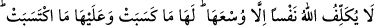
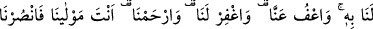
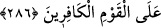

billah” şeklinde Allah’ı zikretmekle geçer. Bunlar ise kişiyi Allah’ın azabından korur
ve ona bütün fetih kapılarını açar.
Tahkîka ulaşman için bütün vakitlerini tevbe, istiğfâr, tâat, şükür ve rızâ ile geçirmen
lâzımdır. Bunları yapabilmek kalbin tasfiyesine ve nefsin tezkiyesine bağlıdır. Bunu
elde edebilmek ise ancak şu dört yoldan biri ile mümkündür:
1. Allah’ın vasıtasız olarak kalbine attığı bir nûr ile,
2. Kemal noktasındaki aklın sâhip olduğu ilimle,
3. Fuzûli, faydasız meşgûliyetten arınmış tefekkür ile,
4. Bir şeyh-i kâmilin sohbeti ile.
Şeyh Ebû Medyen der ki: “Şeyh, ahlâkı ile seni terbiye edip düzelten ve gönlünü
nûru ile aydınlatan kimsedir. Şeyh, huzurunda olduğun zaman seni Allah’a yönelten,
uzakta olduğun zaman ise seni koruyandır. Ey kul, nefsini temizlemeye ve kendi
kalıplarından çıkarak her şeyin hakikatine ulaşmaya çalış.”
Kendi varlığından gafil olup benlikten geçmedikçe
Asla kendi hakiki murâdına nâil ve vâsıl olamazsın.
Görünen varlık denizini aşıp sâhile çıkmadıkça
Aşıklar yolunun anlayışına göre asla kemâl bulamazsın.
286. Allah her şahsı, ancak gücünün yettiği ölçüde mükellef kılar. Herkesin
kazandığı (hayır) kendine, yapacağı (şer) de kendinedir. Rabbimiz! Unutursak veya
hataya düşersek bizi sorumlu tutma. Ey Rabbimiz! Bizden öncekilere yüklediğin
gibi bize de ağır bir yük yükleme. Ey Rabbimiz! Bize gücümüzün yetmediği işler
de yükleme! Bizi affet! Bizi bağışla! Bize acı! Sen bizim mevlâmızsın. Kâfirler
topluluğuna karşı bize yardım et!
“Gönlünüzde olanları açığa vursanız da gizleseniz de (farketmez) Allah onunla sizi
sorguya çeker” âyet-i kerîmesi inince ashâb-ı kiram telâşa düştüler. Rasûlullah (s.a.)’e
gelerek, önünde diz çöktüler ve “Ey Allah’ın Rasûlü! Bize namaz, oruç, hac ve cihad
gibi güç yetirebileceğimiz şeyler emredildi. Onları yapıyorduk. Şimdi sana indirilen şu
âyetin gereğini yerine getirmeye tâkatimiz yetmez” dediler. Rasûlullah (s.a.) “Yoksa siz
de, sizden önce Yahûdî ve hıristiyanların dediği gibi “işittik isyan ettik” demek mi
istiyorsunuz” buyurunca ashâb-ı kiram bir ağızdan: “İşittik, itaat ettik. Günahlarımızı